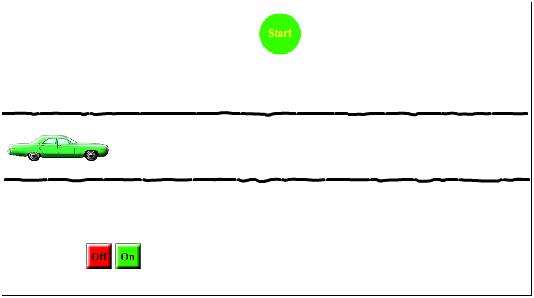

Shakshat Virtual Lab 
INDIAN INSTITUTE OF TECHNOLOGY GUWAHATI
Procedure
Click on the SIMULATOR tab to proceed to the experiment.
You will see the first screen with instructions and start button. ( see below)

Press the green “Start” button to start the experiment.
In next screen you will see a green car, a traffic signal on the top and “ON” and “OFF” bottoms at the bottom.
The traffic signal will display “Start” or “Stop” randomly.
If signal shows start - you have to start the car by clicking "ON" button.
If signal shows stop - you haved to stop the car by clicking "OFF" button.
Thus to start the car press "ON" button. To stop the car press "OFF" button.
Observe traffic signal carefully. It will display signals 4-times.
When you are ready to start the simulation click on the "Start" button.
Once you start you will not be able to return back till the experiment is over.

Observe that
Consistency is reflected when Start signal glows in Green color and Stop signal glows in red color.
Inconsistency is reflected when Start signal glows in Red color and Stop signal glows in green color